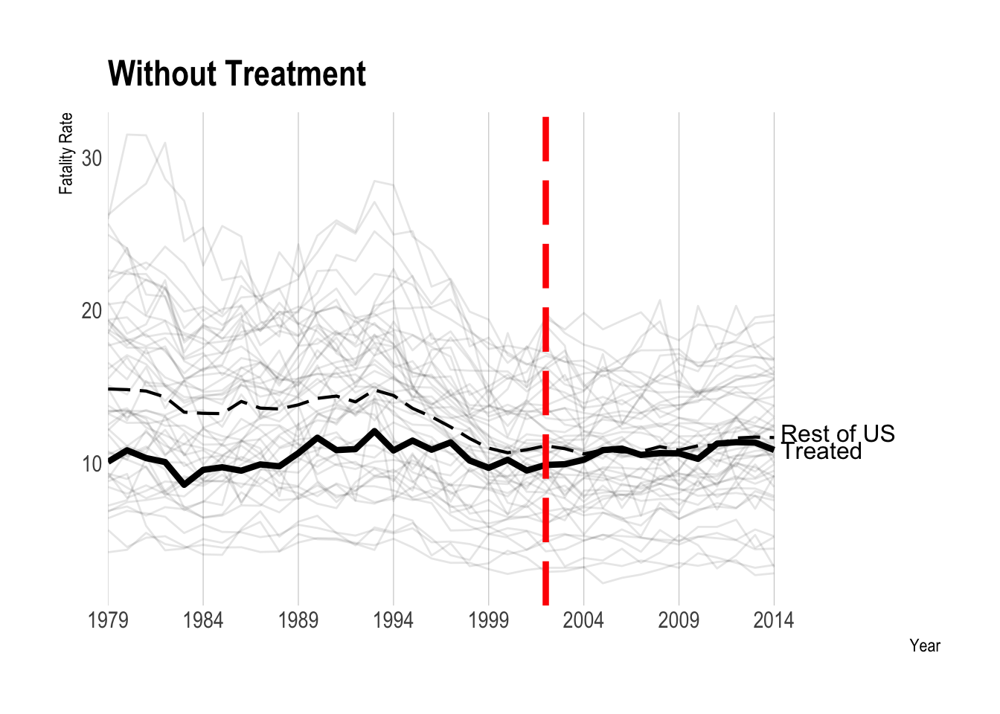
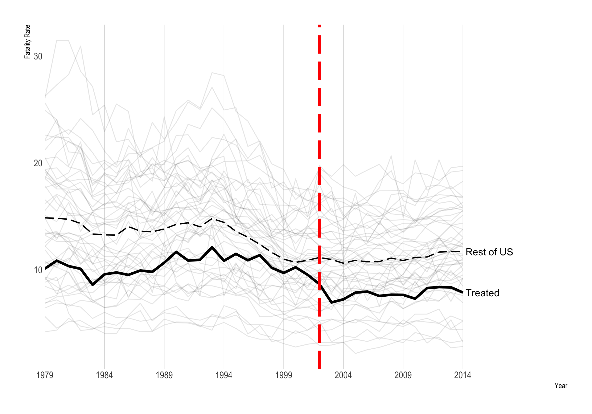
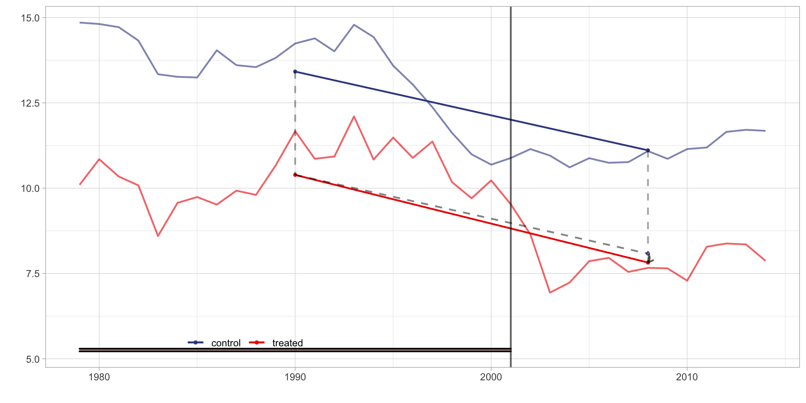
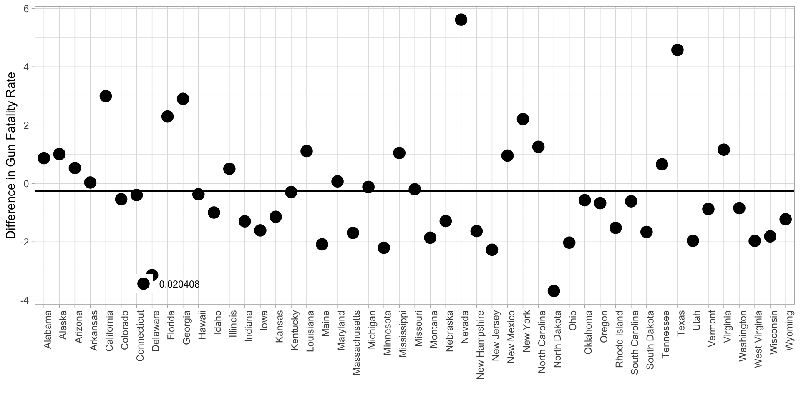
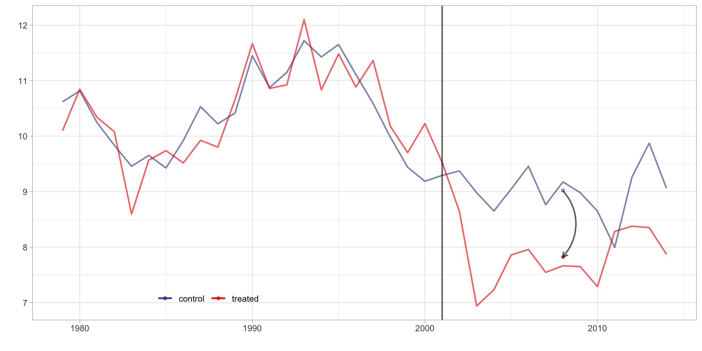
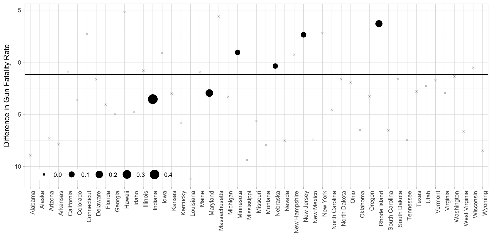
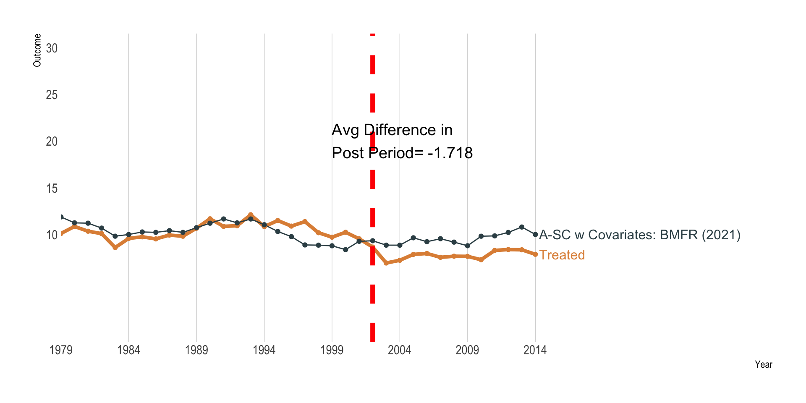

Synthetic Control Methods
Motivation
Motivation
- Hypothetical gun law passed in a single state (Pennsylvania) in 2002.
- The plot shows the total firearm death rate, by year and state
- I have imposed a (simulated) immediately-acting treatment effect (\(\tau = -3\)).
Data drawn from Schell et al. “Evaluating Methods to Estimate the Effect of State Laws on Firearm Deaths A Simulation Study”
Firearm Death Rate, by State and Year

How Would You Evaluate This Policy Change?
- Difference-in-Differences
How Would You Evaluate This Policy Change?
- Difference-in-Differences
- Difference in average pre-treatment outcomes between treated and control units is subtracted from the difference in average posttreatment outcomes
How Would You Evaluate This Policy Change?
- Matching
How Would You Evaluate This Policy Change?
- Matching
- For each treated unit, one or more matches are found among the controls, based on both pre-treatment outcomes and other covariates.
How Would You Evaluate This Policy Change?
- Synthetic control
How Would You Evaluate This Policy Change?
- Synthetic control
- For each treated unit, a synthetic control is constructed as a weighted average of control units that matches pretreatment outcomes and covariates for the treated units.
How Would You Evaluate This Policy Change?
- Regression methods (e.g., interrupted time series, imputation estimators)
How Would You Evaluate This Policy Change?
- Regression methods (e.g., interrupted time series, imputation estimators)
- Post-treatment outcomes for control units are regressed on pre-treatment outcomes and other covariates and the regression coefficients are used to predict the counterfactual outcome for the treated units.
A Generalized Framework
\(N + 1\) units observed for \(T\) periods, with a subset of treated units (for simplicity - unit 0) treated from \(T0\) onwards.
Time-varying treatment indicator: \(W_{i,t}\)
Potential outcomes for unit \(0\) define the treatment effect: \(\tau_{0,t} := Y_{0,t}(1) − Y_{0,t}(0)\) for \(t = T0 + 1, . . . , T\)
Source: Doudchenko and Imbens (2016) and Apoorva Lal
A Generalized Framework
Observed outcome: \(Y^{obs}_{i,t} = Y_{i,t}(W_{i,t})\)
Time-invariant characteristics \(X_i := (X_{i,1}, . . . , X_{i,M} )^T\) for each unit, which may include lagged outcomes Y^{obs}_{i,t} for \(t ≤ T0\).
Source: Doudchenko and Imbens (2016) and Apoorva Lal
Data Setup
| state | year | deaths | population | crude_rate | crude_rate_lag1 | crude_rate_lag2 | crude_rate_lag3 | year_cat | pc1 | pc2 | pc3 | pc4 | pc5 | pc6 | pc7 | pc8 | pc9 | pc10 | pc11 | pc12 | pc13 | pc14 | pc15 | pc16 | pc17 | pc18 | pc19 | pc20 | pc21 | pc22 | pc23 | pc24 | pc25 | pc26 | pc27 | pc28 | pc29 | pc30 | pc31 | pc32 | population_std | levels_coding | ch_levels_coding | cr_adj | cr_adj_lag1 | lag1 |
|---|---|---|---|---|---|---|---|---|---|---|---|---|---|---|---|---|---|---|---|---|---|---|---|---|---|---|---|---|---|---|---|---|---|---|---|---|---|---|---|---|---|---|---|---|---|---|
| Alabama | 1979 | 856 | 3873403 | 22.10 | NA | NA | NA | 1979 | -3.05 | 3.15 | 2.02 | -0.10 | -0.63 | -0.36 | -0.04 | 0.13 | 0.03 | 0.19 | 0.31 | -0.14 | 0.36 | -0.24 | -0.64 | -0.85 | 0.24 | -0.17 | 0.15 | 0.05 | -0.45 | -0.05 | 0.11 | -0.17 | 0.32 | 0.10 | 0.09 | -0.03 | 0.05 | 0.06 | -0.04 | -0.02 | 0.72 | 0 | 0 | 22.10 | NA | NA |
| Alabama | 1980 | 938 | 3898117 | 24.06 | 22.10 | NA | NA | 1980 | -3.47 | 3.49 | 2.05 | -0.10 | -0.53 | -0.34 | 0.26 | 0.39 | -0.01 | 0.61 | 0.03 | 0.11 | 0.05 | -0.20 | -0.81 | -1.10 | 0.38 | 0.23 | 0.00 | 0.49 | -0.94 | 0.05 | 0.19 | -0.19 | 0.01 | 0.38 | -0.08 | -0.07 | -0.06 | 0.20 | -0.05 | -0.07 | 0.72 | 0 | 0 | 24.06 | 22.10 | 22.10 |
| Alabama | 1981 | 824 | 3920097 | 21.02 | 24.06 | 22.10 | NA | 1981 | -3.42 | 3.56 | 2.27 | -0.50 | -0.50 | -0.70 | 0.20 | 0.33 | 0.20 | 0.39 | -0.01 | 0.07 | 0.18 | -0.63 | -0.85 | -0.69 | 0.34 | 0.27 | 0.17 | 0.49 | -0.43 | 0.08 | 0.16 | -0.28 | 0.26 | 0.28 | -0.12 | 0.02 | -0.01 | 0.14 | -0.03 | -0.04 | 0.72 | 0 | 0 | 21.02 | 24.06 | 24.06 |
| Alabama | 1982 | 820 | 3925924 | 20.89 | 21.02 | 24.06 | 22.10 | 1982 | -3.23 | 3.35 | 2.07 | -0.45 | -0.53 | -1.09 | 0.04 | 0.50 | 0.45 | 0.26 | 0.48 | 0.11 | -0.04 | -0.57 | -0.12 | -0.24 | 0.15 | -0.04 | 0.22 | 0.07 | -0.25 | 0.38 | -0.06 | -0.38 | 0.03 | -0.19 | 0.00 | 0.11 | 0.06 | 0.02 | 0.06 | -0.02 | 0.73 | 0 | 0 | 20.89 | 21.02 | 21.02 |
| Alabama | 1983 | 710 | 3933838 | 18.05 | 20.89 | 21.02 | 24.06 | 1983 | -3.06 | 3.41 | 1.92 | -0.49 | -0.37 | -0.75 | 0.48 | 0.43 | -0.10 | 0.20 | 0.29 | 0.14 | 0.00 | -1.14 | -0.73 | -0.26 | 0.19 | 0.17 | 0.32 | 0.11 | -0.18 | 0.53 | 0.01 | -0.22 | 0.05 | 0.10 | 0.05 | 0.27 | 0.11 | -0.01 | 0.04 | 0.00 | 0.73 | 0 | 0 | 18.05 | 20.89 | 20.89 |
| Alabama | 1984 | 750 | 3952400 | 18.98 | 18.05 | 20.89 | 21.02 | 1984 | -2.62 | 3.24 | 1.44 | -0.31 | -0.23 | -0.49 | 0.79 | 0.56 | -0.27 | 0.41 | 0.31 | 0.12 | -0.21 | -1.26 | -0.69 | -0.09 | 0.01 | -0.07 | 0.13 | 0.02 | -0.18 | 0.44 | -0.16 | -0.34 | -0.02 | 0.09 | -0.10 | 0.23 | -0.02 | 0.04 | 0.14 | 0.03 | 0.73 | 0 | 0 | 18.98 | 18.05 | 18.05 |
A Generalized Framework
- Let’s focus on the last period:
\[ \tau_{0,T} = Y_{0,T}(1) − Y_{0,T}(0) = Y^{obs}_{0,T} − \color{red}{Y_{0,T}(0)} \] - The last (red) value is an unobserved counterfactual.
A Generalized Framework
- The above methods impute \(Y_{0,T}(1)\) with a linear structure: \[ \hat{Y}_{0,T}(0) = \mu + \sum_{i=1}^n \omega_i \cdot Y^{obs}_{i,T} \]
- The methods differ in whether and how they choose \(\mu\) and \(\omega_i\) given the observed data.
A Menu of Constraints
- No Intercept: \(\mu = 0\)
- Adding Up: \(\sum_{i=1}^{n} \omega_i = 1\)
- Non-negativity: \(\omega_i >= 0\) for all \(i\)
- Constant weights: \(\omega_i = \bar \omega\) for all \(i\).
1. No Intercept: \(\mu = 0\)
- Rules out the possibility that the outcome for the treated unit is systematically different, by a constant amount, than the other units.
- A hallmark of difference-in-differences is that the outcome levels can vary by a fixed difference over time as long as parallel trends holds.
2. Adding Up: \(\sum_{i=1}^{n} \omega_i = 1\)
- Requires that the weights sum up to one.
- Common in matching strategies.
- Implausible if the treated unit is an outlier relative to other units.
- Combined with constraint #1, it may be difficult to obtain good predictions for extreme units.
2. Adding Up: \(\sum_{i=1}^{n} \omega_i = 1\)
Hollingsworth and Wing (2022)
3. Non-negativity: \(\omega_i >= 0\) for all \(i\)
- Is an important restriction on standard synthetic control methods.
- Helps ensure that there is a unique solution for control unit weights.
- Often ensures that the weights are non-zero only for a small subset of the control units, making the weights easier to interpret.
4. Constant weights: \(\omega_i = \bar \omega\) for all \(i\).
- Strengthens the nonnegativity condition by making the assumption that all control units are equally valid.
- Common in DID (we’ll see this in a minute).
- In conjuction to constraint 2 (Adding Up), implies that weights are all equal to 1/N, where N is number of control units.
Difference-in-differences (DID)
Difference-in-Differences
No Intercept: \(\mu = 0\)Adding Up: \(\sum_{i=1}^{n} \omega_i = 1\)
Non-negativity: \(\omega_i >= 0\) for all \(i\)
Constant weights: \(\omega_i = \bar \omega\) for all \(i\).
Difference-in-Differences
Total Firearm Death Rate, by Year and State
Difference-in-Differences Estimate
\(\hat \tau\) = -0.261
DID Estimates by State
- Constant weights: Each of the 49 control states receives weight 1/49 = 0.020408
- Adding Up: These weights all sum to 1
- Non-negativity: All of the weights are positive.
- Overall DID estimate is just a weighted average of these individual estimates.

Synthetic Control
Synthetic Control
No Intercept: \(\mu = 0\)
Adding Up: \(\sum_{i=1}^{n} \omega_i = 1\)
Non-negativity: \(\omega_i >= 0\) for all \(i\)
Constant weights: \(\omega_i = \bar \omega\) for all \(i\).
Synthetic Controls
- Motivation: limit extrapolation bias that can occur when units with different pre-treatment characteristics are combined using a traditional adjustment, such as a linear regression (Kellogg et al. 2021).
Synthetic Control
- Imposing these constraints allows you to create a counterfactual whose outcome trajectory is within the support (“convex hull”) of donor units (i.e., other states)
- The counterfactual treated unit is simply a weighted sum of a subset of donors, with weights calculated to minimize the pre-intervention “distance” between the the treated unit and its synthetic counterfactual.
- Can use both lagged outcome and covariates to construct the weights.
Synthetic Control Estimate
\(\hat \tau\) = -1.201
Weights: Synthetic Control
Synthetic Control From 100,000 feet
- At a high level, synthetic control methods choose a fixed set of weights that, when applied to the control units, produce a counterfactual to the treated unit.
- This counterfactual stands in as a “synthetic” treated unit that traces out what would have happened to the treatment unit had it never been treated.
Synthetic Control From Ground Level
- There are many approaches one could take to estimating the weights.
- We won’t get into all of them here, but many draw on innovative machine-learning methods.
Abadie, Diamond and Heinmueller (2010)
Match on pre-intervention outcome only:
Abadie, Diamond and Heinmueller (2010)
Include state-level predictors:
Elastic Net Synthetic Control
Doudchenko and Imbens (2017)

Augmented Synthetic Control
Ben-Michael, Feller and Rothstein (2021)
Augmented Synthetic Control
Using covariates to improve synthetic match
GSYNTH
- Generalized synthetic control method
- Imputes counterfactuals for each treated unit using control group information based on a linear interactive fixed effects model.
- Allows the treatment to be correlated with unobserved unit and time heterogeneity
GSYNTH
Inference
Inference for Synthetic Control
- Inference can be complex owing to the fact that often a single unit is “treated.”
- Can’t appeal to large sample asymptotics.
Inference for Synthetic Control
- A standard approach: placebo treatments.
- Apply the synthetic control method to each donor unit, and collect the treatment effect estimates.
- Idea: the distribution of placebo effects give you a sense of what could happen under the null of no treatment effect.
- Can construct a p-value by asking where your estimate lies within this distribution.
- Analogous to randomization inference from last time.
Extensions of Synthetic Control
Synthetic Control with Staggered Adoption
- Xu (2017) (
gsynthpackage) - Ben-Michael, Feller, and Rothstein (2022) (
augsynthpackage)
Synthetic Difference-in-Differences
- Arkhangelsky et al. (2019)
- Synthetic DID approach relaxes the parallel trends assumption.
- Key difference:
- Pre-intervention trends do not have to match exactly (i.e., 1. \(\mu = 0\) does not have to hold)
- Weighting is not equivalent across all time periods.
Synthetic Difference-in-Differences
\(\hat \tau\) = -1.783